|
CGAL 4.13 - 3D Mesh Generation
|
|
CGAL 4.13 - 3D Mesh Generation
|
This package is devoted to the generation of isotropic simplicial meshes discretizing 3D domains. The domain to be meshed is a subset of 3D space, required to be bounded. The domain may be connected or composed of multiple components and/or subdivided in several subdomains.
Boundary and subdivision surfaces are either smooth or piecewise smooth surfaces, formed with planar or curved surface patches. Surfaces may exhibit 1-dimensional features (e.g. crease edges) and 0-dimensional features (e.g. singular points as corners tips, cusps or darts), that have to be fairly approximated in the mesh.
The output mesh is a 3-dimensional triangulation, including subcomplexes that approximate each input domain feature: subdomain, boundary surface patch or input domain feature with dimension 0 or 1. Thus, the output mesh includes a 3D submesh covering each subdomain, a surface mesh approximating each boundary or subdividing surface patch, a polyline approximation for each 1-dimensional feature and of course a vertex on each corner.
The main entry points of the package are two global functions that respectively generate and refine such meshes. The mesh generator is customized to output a mesh that fits as much as possible the user needs, for instance in terms of sizing field or with respect to some user customized quality criteria.
The meshing engine used in this mesh generator is based on Delaunay refinement [9], [15], [16]. It uses the notion of restricted Delaunay triangulation to approximate 1-dimensional curves and surface patches [2]. Before the refinement, a mechanism of protecting balls is set up on 1-dimensional features, if any, to ensure a fair representation of those features in the mesh, and also to guarantee the termination of the refinement process, whatever may be the input geometry, in particular whatever small angles the boundary and subdivision surface patches may form [7], [8]. The Delaunay refinement is followed by a mesh optimization phase to remove slivers and provide a good quality mesh.
Optionally, the meshing and optimization algorithms support multi-core shared-memory architectures to take advantage of available parallelism.
The domain to be meshed is assumed to be bounded and representable as a pure 3D complex. A 3D complex is a set of faces with dimension 0, 1, 2, and 3 such that all faces are pairwise interior disjoint and the boundary of each face of the complex is the union of lower-dimensional faces of the complex. The 3D complex is pure, meaning that each face is included in a face of dimension 3, so that the complex is entirely described by the set of its 3D faces and their subfaces. However the 3D complex needs not be connected. The set of faces with dimension lower or equal than 2 forms a 2D subcomplex which needs not be manifold, neither pure, nor connected: some 3D faces may have dangling 2D or 1D faces in their boundary faces.
In the rest of the documentation, we will refer to the input 3D complex as the input domain. The faces of the input domain with dimension 0, 1, 2, and 3 are called respectively corners, curves, surface patches, and subdomains to clearly distinguish them from the faces of the mesh that are called vertices, edges, facets, and cells.
Note that the input complex faces are not required to be linear nor smooth. Surface patches, for instance, may be smooth surface patches or portions of surface meshes with boundaries. Curves may be for instance straight segments, parameterized curves or polylines. Each of those features will be accurately represented in the final mesh.
The 0 and 1-dimensional features of the input domain are usually singular points of the subdomain boundaries, however this is not required. Furthermore, those features are not required to cover all the subdomains boundaries singularities but only those that need to be accurately represented in the final mesh. In the following, we say that a domain has features when it has 0 and 1-dimensional features that need to be accurately represented in the mesh, and we call those features exposed features. Therefore, a domain may be without features either because all boundary surface patches are smooth closed surfaces, or simply because the curves joining different surface patches and the singularities of those patches need not be accurately approximated in the final mesh.
Note also that input complex faces are not required to be connected. Faces of the input domain are identified by indices. If a subdomain is not connected, its different components receive the same index. Likewise different surface patches, curves, or corners may share the same index. Each connected component of a feature will be accurately represented in the final mesh. Note however that the occurrence of multiply connected faces in the input complex may affect the relevance of internal topological checks performed by the mesh generator.
The domain is passed to the mesh generation function as a domain class, often called the oracle, that provides predicates and constructors related to the domain, the subdomains, the boundary surface patches, and also the 0 and 1-dimensional exposed features, if any. Mainly, the oracle provides a predicate to test if a given query point belongs to the domain or not and to find in which subdomain it lies in, in the affirmative case. The domain class also provides predicates and constructors to test the intersection of a query line segment with the boundary surface patches and to construct intersection points, if any. Lastly, if the input domain includes 1-dimensional exposed features, the domain class provides a way to construct sample points on these features.
The current implementation provides classes to represent domains bounded by isosurfaces of implicit functions, polyhedral domains, and domains defined through 3D labeled images. Currently, 1-dimensional features may be defined as segments and polyline segments.
The resulting mesh is output as a subcomplex of a weighted Delaunay 3D triangulation, in a class providing various iterators on mesh elements.
The 3D triangulation provides approximations of the subdomains, surface patches, curves, and corners according to the restricted Delaunay triangulation paradigm. This means that each subdomain is approximated by the union of the tetrahedral cells whose circumcenters are located inside the domain (or subdomain). Each surface patch is approximated by the union of the Delaunay mesh facets whose dual Voronoi edges intersect the surface patch. Such mesh facets are called surface facets in the following. The 1-dimensional exposed features are approximated by sequences of mesh edges and the 0-dimensional exposed features are represented by mesh vertices.
It is possible to extract the facets of the complex as a FaceGraph, using the function facets_in_complex_3_to_triangle_mesh().
The mesh generation algorithm is mainly a Delaunay refinement process. The Delaunay refinement is preceded by a protecting phase to ensure an accurate representation of 1-dimensional features, if any, and followed by an optimization phase to achieve a good quality mesh.
The Delaunay refinement process is driven by criteria concerning either the size and shape of mesh cells and surface facets. The refinement process terminates when there are no more mesh cells or surface facets violating the criteria.
The criteria are designed to achieve a nice spread of the mesh vertices while ensuring the termination of the refinement process. Those criteria may be somehow tuned to the user needs to achieve for instance the respect of a sizing field by mesh elements, some topological conditions on the representation of boundary surfaces in the mesh, and/or some error bound for the approximation of boundary surfaces. To some extent, the user may tune the Delaunay refinement to a prescribed trade-off between mesh quality and mesh density. The mesh density refers to the number of mesh vertices and cells, i.e. to the complexity of the mesh. The mesh quality referred to here is measured by the radius edge ratio of surface facets end mesh cells, where the radius edge ratio of a simplex (triangle or tetrahedron) is the ratio between its circumradius and its shortest edge length.
If the domain description includes 0 dimensional features, the corresponding points are inserted into the Delaunay triangulation from the start.
If the domain has 1-dimensional exposed features, the method of protecting balls [7], [8] is used to achieve an accurate representation of those features in the mesh and to guarantee that the refinement process terminates whatever may be the dihedral angles formed by input surface patches incident to a given 1-feature or the angles formed by two 1-features incident to a 0-feature.
According to this method, the 1-dimensional features are sampled with points and covered by protecting balls centered on the sample points, in such a way that:
The triangulation embedding the mesh is in fact a weighted Delaunay triangulation, and the triangulation is initialized by the insertion of all the protecting balls, regarded as weighted points. The Delaunay refinement process is then launched as before except that refinement points are no longer circumcenters but are weighted circumcenters. All Steiner vertices inserted by the refinement process are given a zero weight. The method guarantees:
Any tetrahedron that is quasi degenerate has a big radius edge ratio, except those belonging to the family of slivers. A sliver is easily obtained as the convex hull of 4 points close to the equatorial circle of a 3D ball and roughly equally spread along this circle. The Delaunay refinement tracks tetrahedra with big radius edge ratio and therefore eliminates all kinds of badly shaped tetrahedra except slivers.
Therefore, some sliver-shaped tetrahedra may still be present in the mesh at the end of the refinement process. The optimization phase aims to eliminate these slivers.
The optimization phase is a sequence of optimization processes, amongst the following available optimizers: an ODT-smoother, a Lloyd-smoother, a sliver perturber, and a sliver exuder.
The Lloyd and ODT-smoother are global optimizers moving the mesh vertices to minimize a mesh energy. Those optimizers are described respectively in [11], [10] and in [5], [1]. In both cases the mesh energy is the L1 error resulting from the interpolation of the function \( f(x) =x^2\) by a piecewise linear function. In the case of the Lloyd smoother, the interpolation is linear in each Voronoi cell of the set of mesh vertices. In the case of the ODT-smoother, the interpolation is linear in each cell of the Delaunay triangulation of the mesh vertices, hence the name ODT which is an abbreviation for Optimal Delaunay Triangulation.
The Lloyd optimizer is known to be blind to the occurrence of slivers in the mesh while the ODT-smoother tends to chase them out. Both of them are global optimizers, meaning that they try to improve the whole mesh rather than focusing on the worst elements. However, both are empirically known to be very efficient as a preliminary step of optimization as they tend to enhance the efficiency of the perturber and/or the exuder applied afterwards, see Figure 55.3
The perturber and the exuder focus on improving the worst mesh elements. The perturber [17] improves the meshes by local changes in the vertices positions aiming to make slivers disappear. The exuder [6] chases the remaining slivers by re-weighting mesh vertices with optimal weights.
Each optimization process can be activated or not, and tuned according to the user requirements and the available time. By default, only the perturber and the exuder are activated.
Optimization processes are designed to improve mesh quality. However, beware that such an improvement is obtained by perturbing mesh vertices and modifying the mesh connectivity which has an impact on the strict compliance to the refinement criteria. Though a strict compliance to mesh criteria is granted at the end of the Delaunay refinement, this may no longer be true after some optimization processes. Also beware that the default behavior does involve some optimization processes.
A 3D mesh generation process is launched through a call to one of the two following functions:
The function make_mesh_3() generates from scratch a mesh of the input domain, while the function refine_mesh_3() refines an existing mesh of the input domain. Note that as the protection of 0 and 1-dimensional features does not rely on Delaunay refinement, the function refine_mesh_3() has no parameter to preserve features.
The following sections describe the different template parameters (and their requirements) of these two global functions.
The template parameter C3T3 is required to be a model of the concept MeshComplex_3InTriangulation_3, a data structure devised to represent a three dimensional complex embedded in a 3D triangulation. In both functions, an instance of type C3T3 is used to maintain the current approximating simplicial mesh and to represent the final 3D mesh at the end of the procedure.
The embedding 3D triangulation is required to be the nested type CGAL::Mesh_triangulation_3::type, provided by the class template CGAL::Mesh_triangulation_3. The type for this triangulation is a wrapper around the class CGAL::Regular_triangulation_3 whose vertex and cell base classes are respectively models of the concepts MeshVertexBase_3 and MeshCellBase_3.
The template parameter MeshDomain is required to be a model of the concept MeshDomain_3. The argument domain of type MeshDomain is the sole link through which the domain to be discretized is known by the mesh generation algorithm.
This concept provides, among others, member functions to test whether or not a query segment intersects boundary surfaces, and to compute an intersection point in the affirmative. The MeshDomain_3 concept adds member functions which given a query point tell whether the point lies inside or outside the domain and in which subdomain the point lies, if inside.
If the domain description includes 0 and 1-dimensional features that have to be accurately represented in the final mesh, the template parameter MeshDomain is required to be of a model of the concept MeshDomainWithFeatures_3. The concept MeshDomainWithFeatures_3 mainly provides the incidence graph of 0, 1 and 2-dimensional features, and a member function to construct sample points on curves.
Users whose domain is a model of MeshDomainWithFeatures_3 can choose to have the corners and curves of the domain represented in the mesh or not, using the following parameters:
parameters::features(domain) sets features according to the domain, i.e. 0 and 1-dimensional features are taken into account if domain is a MeshDomainWithFeatures_3. parameters::no_features() prevents the representation of 0 and 1-dimensional features in the mesh. This is useful to get a smooth and rough approximation of a domain with features. The template parameter MeshCriteria must be a model of the concept MeshCriteria_3, or a model of the refined concept MeshCriteriaWithFeatures_3 if the domain has exposed features. The argument of type MeshCriteria passed to the mesh generator specifies the size and shape requirements for the tetrahedra in the mesh and for the triangles in the boundary surface mesh. These criteria condition the rules that drive the refinement process. At the end of the refinement process, mesh elements satisfy the criteria. Note that this may not be strictly true anymore after the optimization phase, but this last phase is devised to only improve the mesh quality.
The criteria for surface facets are governed by the four following parameters:
facet_angle. This parameter controls the shape of surface facets. Specifically, it is a lower bound for the angle (in degrees) of surface facets. When boundary surfaces are smooth, the termination of the meshing process is guaranteed if this angular bound is at most 30 degrees [9]. facet_size. This parameter controls the size of surface facets. Each surface facet has a surface Delaunay ball which is a ball circumscribing the surface facet and centered on the surface patch. The parameter facet_size is either a constant or a spatially variable scalar field, providing an upper bound for the radii of surface Delaunay balls. facet_distance. This parameter controls the approximation error of boundary and subdivision surfaces. Specifically, it is either a constant or a spatially variable scalar field. It provides an upper bound for the distance between the circumcenter of a surface facet and the center of a surface Delaunay ball of this facet. facet_topology. This parameters controls the set of topological constraints which have to be verified by each surface facet. By default, each vertex of a surface facet has to be located on a surface patch, on a curve, or on a corner. It can also be set to check whether the three vertices of a surface facet belongs to the same surface patch. This has to be done cautiously, as such a criterion needs that each intersection of input surface patches is an input 1-dimensional feature. The criteria for mesh cells are governed by two parameters:
cell_radius_edge_ratio. This parameter controls the shape of mesh cells (but can't filter slivers, as we discussed earlier). It is an upper bound for the ratio between the circumradius of a mesh tetrahedron and its shortest edge. There is a theoretical bound for this parameter: the Delaunay refinement process is guaranteed to terminate for values of cell_radius_edge_ratio bigger than 2. cell_size. This parameter controls the size of mesh tetrahedra. It is either a scalar or a spatially variable scalar field. It provides an upper bound on the circumradii of the mesh tetrahedra. Figure 55.4 shows how the mesh generation process behaves with respect to these parameters.
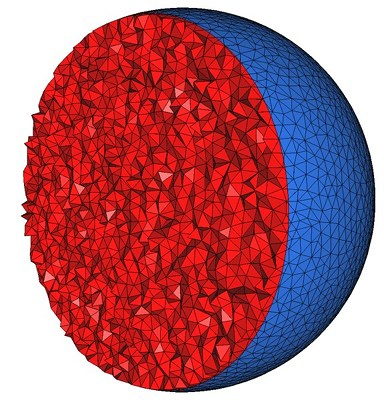
| ||
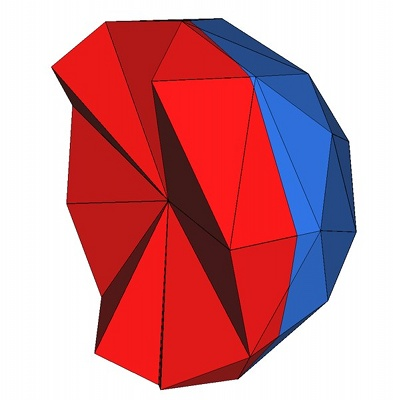
|
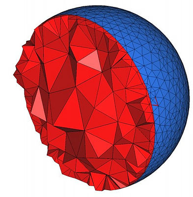
|
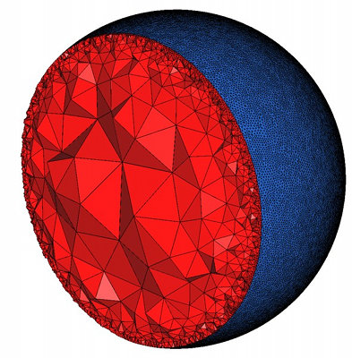
|
If the domain has 1-dimensional exposed features, the criteria includes a sizing field to guide the sampling of 1-dimensional features with protecting balls centers.
edge_size. This constant or variable scalar field is used as an upper bound for the distance between two protecting ball centers that are consecutive on a 1-feature. This parameter has to be set to a positive value when 1-dimensional features protection is used. The four additional parameters are optimization parameters. They control which optimization processes are performed and allow the user to tune the parameters of the activated optimization processes. These parameters have internal types which are not described but the library provides global functions to generate appropriate values of these types:
parameters::lloyd() and parameters::no_lloyd() activate and deactivate the Lloyd smoother. parameters::odt() and parameters::no_odt() activate and deactivate the ODT-smoother. parameters::perturb() and parameters::no_perturb() activate and deactivate the perturber. parameters::exude() and parameters::no_exude() activate and deactivate the exuder. These parameters are optional and can be passed in any order. If one parameter is not passed the default value is used. By default, only the perturber and the exuder are activated. Note that whatever may be the optimization processes activated by make_mesh_3() or refine_mesh_3(), they are always launched in the order that is a suborder of the following: ODT-smoother, Lloyd-smoother, perturber, and exuder.
The package also provides four global functions to launch each optimization process independently. These functions are useful for advanced experimentation on the efficiency of each optimization method. Note however that the exuder adds on mesh vertices weights that are conditioned by vertices positions. Therefore an exudation process should never be run before a smoother or a perturber. For a maximum efficiency, whatever may be the optimization processes activated, they should be launched in the order that is a suborder of the following: ODT-smoother, Lloyd-smoother, perturber, and exuder.
Note that the global functions activating the optimization processes or launching those processes have themselves parameters (see details in reference pages) to tune the optimization process.
Enabling parallel meshing and optimization algorithms is achieved through setting the third template parameter of the Mesh_triangulation_3 class to Parallel_tag, when defining the triangulation type. Note that when the user provides his/her own vertex and cell base classes, the MeshVertexBase_3 and MeshCellBase_3 concepts impose additional requirements.
Parallel algorithms require the executable to be linked against the Intel TBB library. To control the number of threads used, the user may use the tbb::task_scheduler_init class. See the TBB documentation for more details.
The following code produces a 3D mesh for a domain whose boundary surface is an isosurface defined by an implicit function. Figure 55.5 shows a cut view of the resulting mesh.
Note the use of named parameters (from Boost library) in the constructor of the Mesh_criteria instance.
File Mesh_3/mesh_implicit_sphere.cpp
The following example produces a 3D mesh for a domain whose boundary surface is the isosurface associated to an isovalue inside the input gray-level 3D image. In the distribution you can also find the example Mesh_3/mesh_3D_gray_vtk_image.cpp which can deal with DICOM files as input.
File Mesh_3/mesh_3D_gray_image.cpp
The following code produces a 3D mesh for a domain consisting of several subdomains. It uses Implicit_multi_domain_to_labeling_function_wrapper as model of ImplicitFunction which is required by Labeled_mesh_domain_3.
Figure 55.6 shows a view and a cut view of the resulting mesh.
File Mesh_3/mesh_implicit_domains.cpp
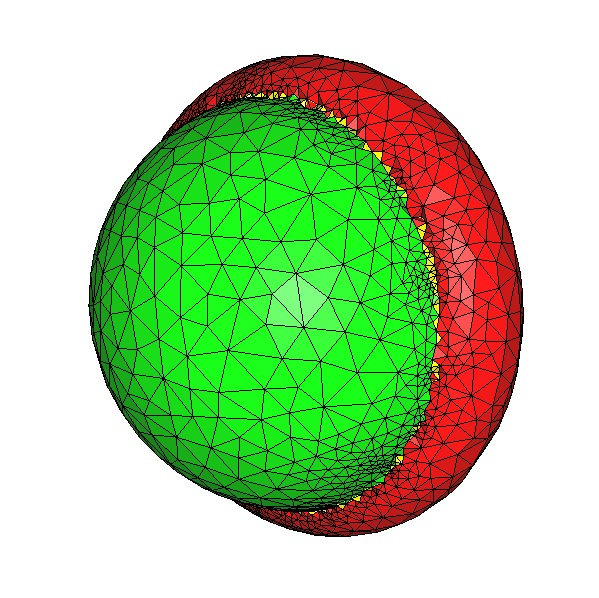
|
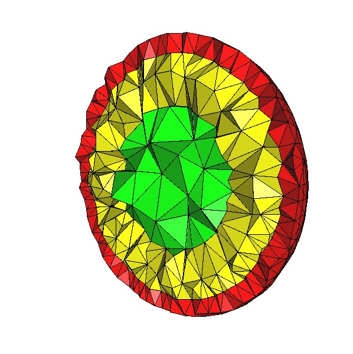
|
The following code produces a 3D mesh for a domain consisting of several subdomains too. Here, the set of subdomains is given by a vector of vector of signs, whereas the set was built automatically in the previous example. Each subdomain corresponds to a sign vector [s1, s2, ..., sn] where si is the sign of the function fi(p) at a point p of the subdomain.
Figure 55.7 shows a view of the resulting mesh.
File Mesh_3/mesh_implicit_domains_2.cpp
The example code of Mesh_3/mesh_hybrid_mesh_domain.cpp produces a 3D mesh for a domain consisting of several subdomains too. Here, the set of subdomains is given by two subdomains of different types : a domain defined by an implicit sphere, and a domain defined by the triangulated surface of a cube.
Figure 55.8 shows the results with or without the protection of the 1D-features.
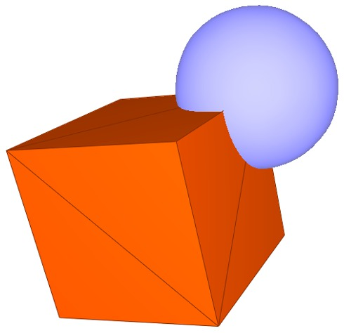
|
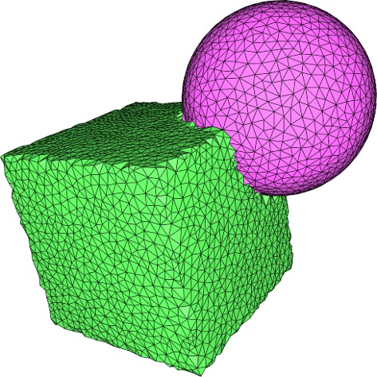
|
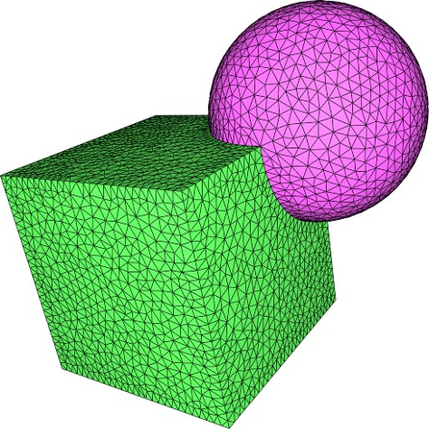
|
Middle : the output mesh without any call to add_features().
Right : the output mesh with added 1D-features at the intersection of subdomains.
The following code produces a 3D mesh for a domain defined by a polyhedral surface. Figure 55.9 shows the resulting mesh.
File Mesh_3/mesh_polyhedral_domain.cpp
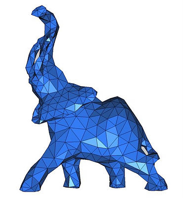
|
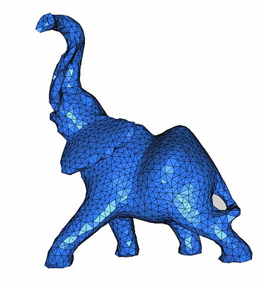
|
In the following example we have a "bounding polyhedron" which defines the meshing domain and two surfaces inside this domain. The surfaces inside the domain may be closed surfaces as well as surfaces with boundaries. In the case of a closed surface the volume delimited by this surface is also considered as inside the domain. previous subsection.
File Mesh_3/mesh_polyhedral_domain_with_surface_inside.cpp
The following code creates a polyhedral domain, with only one polyhedron, and no "bounding polyhedron", so the volumetric part of the domain will be empty. This allows to remesh a surface, and is equivalent to the function make_surface_mesh().
File Mesh_3/remesh_polyhedral_surface.cpp
The following code produces a 3D mesh from a 3D image. The image is a segmented medical image in which each voxel is associated a label in accordance with the tissue the voxel belongs to. The domain is therefore a multi-domain where each subdomain corresponds to a specific tissue.
In the following example, the image is read from the file liver.inr.gz which is encoded in the format of the library Inrimage http://inrimage.gforge.inria.fr/. The resulting mesh is shown in Figure 55.12.
The example Mesh_3/mesh_3D_image_with_custom_initialization.cpp is a modification of Mesh_3/mesh_3D_image.cpp. The goal of that example is to show how the default initialization of the triangulation, using random rays, can be replaced by a new implementation. In this case, the initialization detects all connected components in the 3D segmented image, and inserts points in the triangulation for each connected component.
For the meshing, in the previous example (Mesh_3/mesh_3D_image.cpp), we called make_mesh_3() as follows.
In the example Mesh_3/mesh_3D_image_with_custom_initialization.cpp, that call is replaced by:
c3t3 object,initialize_triangulation_from_labeled_image() that inserts points in the triangulation,refine_mesh_3(). The code of the function initialize_triangulation_from_labeled_image() is in the non-documented header CGAL/Mesh_3/initialize_triangulation_from_labeled_image.h. As it is undocumented and may be removed or modified at any time, if you wish to use it then you should copy-paste it to your user code. The code of that function is rather complicated. The following lines show how to insert new points in the c3t3 object, with the calls to MeshVertexBase_3::set_dimension() and MeshVertexBase_3::set_index().
The value of index must be consistent with the possible values of Mesh_domain::Index. In CGAL/Mesh_3/initialize_triangulation_from_labeled_image.h, it is constructed using the API of the mesh domain, as follows. First the functor construct_intersect is created
Mesh_domain::Intersection object (a tuple with three elements) is constructed using a call to the functor construct_intersection index is the element #1 of intersect. The result of the custom initialization can be seen in Figure 55.13. The generated 3D image contains a big sphere at the center, and 50 smaller spheres, generated randomly. Without the custom initialization, only the biggest component (the sphere at the center) was initialized and meshed. With the custom initialization, the initial c3t3 object contains points on all connected components, and all spheres are meshed.
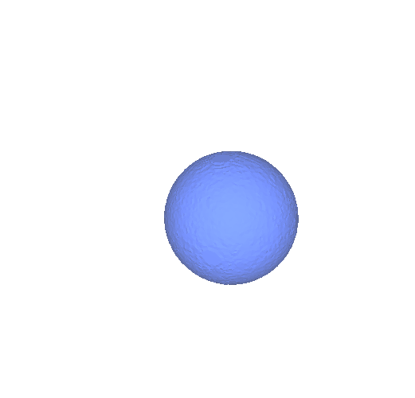
|
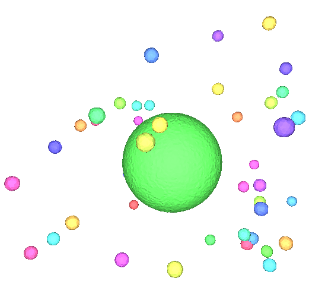
|
Right: the mesh generated after the initialization of all connected components
Note that the example Mesh_3/mesh_3D_image_with_custom_initialization.cpp also shows how to create a 3D image using the undocumented API of CGAL_ImageIO.
The code of the function random_labeled_image() is in the header file Mesh_3/random_labeled_image.h.
The following example shows how to use an analytical function as sizing field.
File Mesh_3/mesh_implicit_sphere_variable_size.cpp
The following example shows how to use different size for different organs in a 3D medical image.
File Mesh_3/mesh_3D_image_variable_size.cpp
The following example shows how to use another custom sizing function, that is k-Lipschitz. For each subdomain, the user provides the parameter k, a minimal size and maximal size for cells.
File Mesh_3/mesh_polyhedral_domain_with_lipschitz_sizing.cpp
The following example shows how to generate a mesh from a polyhedral surface. The output mesh conforms to the sharp features of the input surface.
File Mesh_3/mesh_polyhedral_domain_with_features.cpp
The following example shows how to generate a mesh from an implicit domain. We add by hand the intersection of the spheres as a sharp feature.
File Mesh_3/mesh_two_implicit_spheres_with_balls.cpp
The example Mesh_3/mesh_3D_image_with_features.cpp is a modification of Mesh_3/mesh_3D_image.cpp. That example shows how to generate a mesh from a 3D labeled image (also known as "a segmented image"), that has 2D surfaces that intersect the box corresponding to the boundary of the image. The intersection of the 2D surface with the bounding box of the image is composed of 1D curves, and must be defined as 1D-features in the domain.
The first modification is the type of the mesh domain. Instead of being Labeled_mesh_domain_3, it is a Mesh_domain_with_polyline_features_3 templated by a Labeled_mesh_domain_3.
Then, in the function main(), after the domain object has been created, a dedicated function computes the 1D-features, and adds them to the domain.
The function template add_1D_features() is defined in the example file. It uses non-documented code from CGAL, that should be copy-pasted in any user-code willing to use similar code. It uses the undocumented function template CGAL::polylines_to_protect that computes the 1D-features that correspond to the intersection of the bounding box of the image with the surfaces defined by the image. At the same time, a few other polylines are added as 1D-features, to protect 1D curves in the interior of the image. Then, the method CGAL::Mesh_domain_with_polyline_features_3::add_features is called twice to add the computed 1D-features to the mesh domain.
In the meshing criteria, if 1D features are added to the domain, the user can define the parameter edge_size of the criteria class Mesh_criteria_3, as follows, to set up an upper bound on the length of the edges of the 1D-mesh corresponding to the 1D-features.
The rest of the example is similar to Mesh_3/mesh_3D_image.cpp.
Figure 55.19 shows the results without or with the protection of the 1D-features.
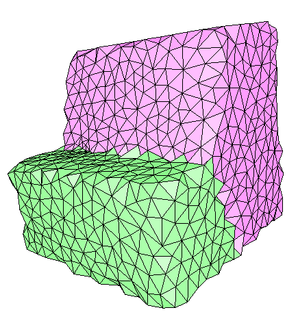
|
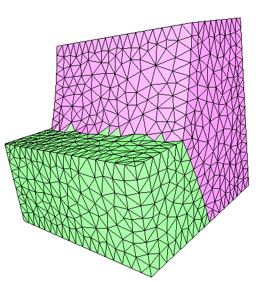
|
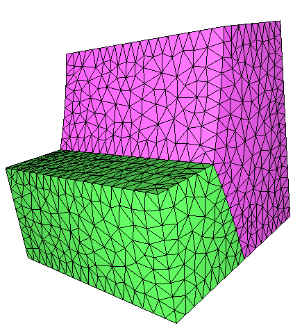
|
add_features().
Middle: the mesh with only the 1D-features computed by CGAL::polylines_to_protect().
Right: the mesh with added 1D-features in the interior of the bounding box of the image.
The following example shows how to generate a mesh from a polyhedral complex that forms a bounded domain. The domain is defined by a group of polyhedral surfaces that are conformal. For each facet of the input polyhedral surfaces, the ids of incident subdomains are known. The input surfaces intersect along polylines that are considered as sharp features, and protected as for all domain types in this Section.
File Mesh_3/mesh_polyhedral_complex.cpp
Figure 55.20 shows the results without or with the protection of the 1D-features.
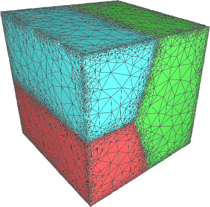
|
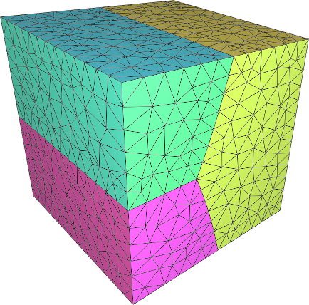
|
detect_features(). The mesh is overrefined next to sharp features, because the mesher tries to reach the target facet_distance, by inserting centers of surface Delaunay balls, that are not likely to be on sharp edges.
Right: the mesh with added 1D-features along sharp edges and edges shared by at least two of the input polyhedral surfaces forming the complex.
In the previous examples, the mesh generation is launched through a call make_mesh_3() with a minimal number of parameters. In such cases, the default optimization strategy is applied: after the Delaunay refinement process two optimization steps are performed, a perturbation and a sliver exudation. The following examples show how to disable default optimization steps and how to tune the parameters of optimization steps.
In this first example, we show how to disable the exudation step. The optimization phase after the refinement includes only a perturbation phase which is launched with no time bound and an objective of 10 degrees for the minimum dihedral angle of the mesh. The example shows two ways of achieving the same result. The first way issues a single call to make_mesh_3() with the required optimization process activated and tuned. In the second way, make_mesh_3() is first called without any optimization process and the resulting mesh is next optimized through a call to perturb_mesh_3() with tuned parameters.
File Mesh_3/mesh_optimization_example.cpp
In this second example, we show how to call the Lloyd optimization on the mesh, followed by a call to exudation. We set a time bound of 30s for the Lloyd optimization. We set a time bound of 10s and a sliver bound of 10 degrees for the exuder.
File Mesh_3/mesh_optimization_lloyd_example.cpp
We provide here some benchmarks of the performance of the mesh generation algorithms.
The computer used for benchmarking is a PC running Linux64 with two Intel Xeon CPU X5450 clocked at 3.00 GHz with 32GB of RAM. The program has been compiled with g++ v4.3.2 with the -O3 option. These benchmarks have been done using CGAL v3.8. Note that these benchmarks were obtained with the sequential version of the algorithm, which does not take advantage of multi-core architectures. See the next section for performance of parallel algorithms.
We study the refinement part of the mesh generation engine in this section. We give the CPU time (measured by Timer) using the 3 provided oracles. In all experiments, we produce well shaped elements: we set the facet angle bound and the radius edge bound to their theoretical limit (resp. 30 degrees and 2). We also use the same uniform sizing field for facets and cells.
We mesh an analytical sphere of radius 1.
| Size bound | vertices nb | facets nb | tetrahedra nb | CPU Time (s) | vertices/second |
| 0.2 | 499 | 488 | 2,299 | 0.0240 | 20,800 |
| 0.1 | 3,480 | 2,046 | 18,756 | 0.146 | 23,800 |
| 0.05 | 25,556 | 8,274 | 149,703 | 1.50 | 17,000 |
| 0.025 | 195,506 | 33,212 | 1,194,727 | 17.4 | 11,200 |
| 0.0125 | 1,528,636 | 134,810 | 9,547,772 | 179 | 8,530 |
We mesh a volume bounded by a closed triangulated surface made of about 50,000 vertices and 100,000 triangles. Figure 55.21 shows the mesh obtained when size is set to 0.005.
| Size bound | vertices nb | facets nb | tetrahedra nb | CPU Time (s) | vertices/second |
| 0.04 | 423 | 717 | 1,332 | 0.488 | 866 |
| 0.02 | 2,638 | 3,414 | 10,957 | 2.64 | 998 |
| 0.01 | 18,168 | 15,576 | 90,338 | 13.9 | 1,310 |
| 0.005 | 129,442 | 64,645 | 722,018 | 66.7 | 1,940 |
| 0.0025 | 967,402 | 263,720 | 5,756,491 | 348 | 2,780 |
We mesh image number 2 from the 3D-IRCADb-01 (available at http://www.ircad.fr/softwares/3Dircadb/3Dircadb1/index.php) public database. The size of this image is 512x512x172 voxels (about 45M voxels). The size of the voxels is 0.78mm x 0.78mm x 1.6mm. Figure 55.22 shows the mesh obtained for size set to 4.
| Size bound (mm) | vertices nb | facets nb | tetrahedra nb | CPU Time (s) | vertices/second |
| 16 | 3,898 | 4,099 | 20,692 | 0.344 | 11,300 |
| 8 | 34,117 | 27,792 | 199,864 | 3.09 | 11,000 |
| 4 | 206,566 | 86,180 | 1,253,694 | 22.4 | 9,230 |
| 2 | 1,546,196 | 329,758 | 9,617,278 | 199 | 7,780 |
We provide below speed-up charts generated using the parallel version of the meshing algorithms of CGAL 4.5. The machine used is a PC running Windows 7 64-bits with two 6-core Intel Xeon CPU X5660 clocked at 2.80 GHz with 32GB of RAM. The program has been compiled with Microsoft Visual C++ 2012 in Release mode.
Figure Figure 55.23 shows mesh refinement speed-up, and figure Figure 55.24 shows Lloyd optimization speed-up. ODT optimization exhibits similar speed-up.
The CGAL mesh generation package implements a meshing engine based on the method of Delaunay refinement introduced by Chew [9] and Ruppert [15] and pioneered in 3D by Shewchuk [16]. It uses the notion of restricted Delaunay triangulation to approximate 1-dimensional curved features and curved surface patches and rely on the work of Boissonnat and Oudot [2] and Oudot et al. [13] to achieve accurate representation of boundary and subdividing surfaces in the mesh. The mechanism of protecting balls, used to ensure a fair representation of 1-dimensional features, if any, and the termination of the refinement process whatever may be the input geometry, in particular whatever small dihedral angles may form the boundary and subdivision surface patches, was pioneered by Cheng et al. [8] and further experimented by Dey, Levine et al. [7]. The optimization phase involves global optimization processes, a perturbation process and a sliver exudation process. The global optimizers are based on Lloyd smoothing [11], [10] and odt smoothing [5], [1], where odt means optimal Delaunay triangulation. The perturbation process is mainly based on the work of Tournois [19] and Tournois et al. [18], while the exudation process is, the now famous, optimization by weighting described in Edelsbrunner et al. [6].
Work on the package Mesh_3 started during the PhD thesis of Laurent Rineau advised by Mariette Yvinec. A code prototype, together with a first version of design and specifications [14] came out of their collaboration.
From the beginning of 2009, most of the work has been performed by Stéphane Tayeb, in collaboration with Mariette Yvinec, Laurent Rineau, Pierre Alliez and Jane Tournois. First, Stéphane released the first public version of the package, implementing the specifications written by Laurent and Mariette.
The optimization processes are heavily based on the work of Jane Tournois and Pierre Alliez during the PhD of Jane advised by Pierre. The optimization phase was imported in the mesh generation package by Stéphane Tayeb and appeared first in release 3.6 of CGAL.
In collaboration with Laurent Rineau, Stéphane also added demos and examples. After some experiments on medical imaging data performed by Dobrina Boltcheva et al. [4], [3], the handling of 1-dimensional features was worked out by Laurent Rineau, Stéphane Tayeb and Mariette Yvinec. It appeared first in the release 3.8 of CGAL.
In 2013, Clément Jamin made the meshing and optimization algorithms parallel on multi-core shared-memory architectures.
 1.8.13
1.8.13